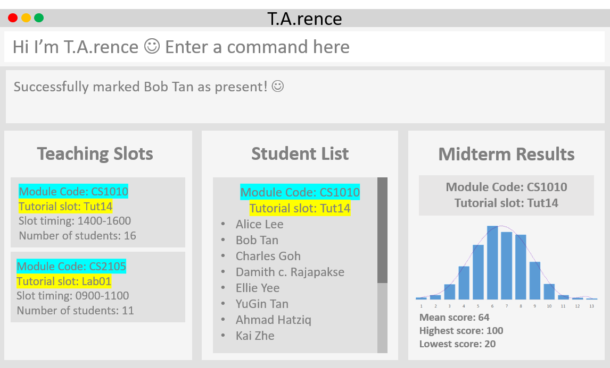

By: AY1920S1-CS2103-T14-2 Since: Aug 2019 Licence: MIT
- 1. Introduction
- 2. Quick Start
- 3. Features
- 3.1. Viewing Help :
help - 3.2. Adding a Mdule:
addModule - 3.3. Adding a Tutorial Slot :
addTutorial - 3.4. Adding a Student :
addStudent - 3.5. Adding an Assignment :
addAssignment[coming in v2.0] - 3.6. Editing a Student :
editStudent[coming in v2.0] - 3.7. Searching Student by Name:
find[coming in v2.0] - 3.8. Deleting a Student :
delete[coming in v2.0] - 3.9. Listing Students from a Tutorial :
list[coming in v2.0] - 3.10. Undo Previously-entered Commands :
undo[coming in v2.0] - 3.11. Clearing all entries :
clear[coming in v2.0] - 3.12. Mark Participation for a Student :
classPart[coming in v2.0] - 3.13. Store a Student’s Results :
addMarks[coming in v2.0] - 3.14. Display Tutorial Class' Test Results :
display[coming in v2.0] - 3.15. Add Personal Notes to a Student :
note[coming in v2.0] - 3.16. Exiting the program :
exit - 3.17. Saving the data [coming in v2.0]
- 3.1. Viewing Help :
- 4. FAQ
- 5. Command Summary
1. Introduction
T.A.rence is for Teaching Assistants (TAs) who prefer to use a desktop app for managing their TA responsibilities. T.A.rence is optimized for those who prefer to work with a Command Line Interface (CLI) while still having the benefits of a Graphical User Interface (GUI). If you can type fast, T.A.rence can get your contact management tasks done faster than traditional GUI apps. Interested? Jump to the Section 2, “Quick Start” to get started. Enjoy!
2. Quick Start
-
Ensure you have Java
11or above installed in your Computer. -
Download the latest
.jarhere. -
Copy the file to the folder you want to use as the home folder for your Address Book.
-
Double-click the file to start the app. The GUI should appear in a few seconds.
 -
Type the command in the command box and press Enter to execute it.
e.g. typinghelpand pressing Enter will open the help window. -
Some example commands you can try:
-
list: lists all contacts[coming in v2.0] -
addn/John Doe p/98765432 e/johnd@example.com m/CS2100, tn/Tutorial-01: adds a student namedJohn Doeinto theTutorial-01class inside moduleCS2100. -
delete3: deletes the student[coming in v2.0] -
exit: exits the app
-
-
Refer to Section 3, “Features” for details of each command.
3. Features
Command Format
-
Words in
UPPER_CASEare the parameters to be supplied by the user e.g. inadd n/NAME,NAMEis a parameter which can be used asadd n/John Doe. -
Parameters can be in any order e.g. if the command specifies
n/NAME e/EMAIL,e/EMAIL n/NAMEis also acceptable.
3.1. Viewing Help : help
Format: help
3.2. Adding a Mdule: addModule
Adds a module to T.A.rence.
Format: addModule m/MODULE_CODE
Examples:
-
addModule m/CS1010 -
addModule m/ST2132
3.3. Adding a Tutorial Slot : addTutorial
Adds a tutorial slot into the specified module.
Pre-condition: Module must already exist inside application.
Format: addTutorial tn/TUTORIAL_NAME st/START_TIME dur/TUTORIAL_DURATION d/TUTORIAL_DAY w/TUTORIAL_WEEKS m/MODULE_CODE
Example:
-
addTutorial tn/Tutorial-01 st/1300 dur/60 d/Mon w/1,2,3 m/CS1010S
Explanation: Adds a tutorial slot called Tutorial-01 which starts at 1300, lasts for 60 minutes,
occurs every Mon during weeks 1,2,3 into module CS1010.
3.4. Adding a Student : addStudent
Adds a student into a specified tutorial.
Pre-condition: Module and tutorial slot must already exist inside the application.
Format: addStudent n/NAME e/EMAIL mat/MATRICULATION_NUMBER nusid/NUSNET_ID tn/TUTORIAL_NAME m/MODULE_CODE
Example:
-
addStudent n/Bob e/bob@gmail.com mat/A1234567Z1 nusid/E1234567 m/CS1010S tn/Tutorial-01
Explanation: Adds a student called 'Bob'; with matriculation number A1234567Z1 and NUS ID `E1234567 into the
tutorial slot called Tutorial-01 for module CS1O1O.
3.6. Editing a Student : editStudent [coming in v2.0]
Allows user to edit an existing student information
Format: editStudent n/[ORIGINAL_STUDENT] n/[EDITED_STUDENT_NAME]
Example:
-
editStudent n/Ben n/Ben Leong
3.7. Searching Student by Name: find [coming in v2.0]
Searches and displays student particulars based on name. The search can be based on partial strings that match
and need not be the full name of the student.
Format: find n\[SEARCH_TERM]
Examples:
-
find n\John
ReturnsjohnandJohn Doe -
find Betsy Tim John
Returns any person having namesBetsy,Tim, orJohn
3.8. Deleting a Student : delete [coming in v2.0]
Deletes the specified person from the address book.
Format: delete INDEX
Examples:
-
list
delete 2
Deletes the 2nd person in the address book. -
find Betsy
delete 1
Deletes the 1st person in the results of thefindcommand.
3.9. Listing Students from a Tutorial : list [coming in v2.0]
Lists all students from a particular tutorial slot.
Format: list c/TUTORIAL_NAME
3.11. Clearing all entries : clear [coming in v2.0]
Clears all entries from the address book.
Format: clear
3.12. Mark Participation for a Student : classPart [coming in v2.0]
Gives participation marks to a student of a particular tutorial slot
Format: `classPart c/[TUTORIAL_NAME] n/[STUDENT_NAME]
3.13. Store a Student’s Results : addMarks [coming in v2.0]
Allows user to add test results of a student of a particular tutorial slot
Format: `addMarks c/[TUTORIAL_NAME] n/[STUDENT_NAME] marks/[MARK_OBTAINED]
3.14. Display Tutorial Class' Test Results : display [coming in v2.0]
Allows user to display overall results (graph) for an exam
Format: `display c/[TUTORIAL_NAME]
3.15. Add Personal Notes to a Student : note [coming in v2.0]
Allows user to add personal notes about class or feedback received by students.
Format: `note t/[NOTES]
3.16. Exiting the program : exit
Exits the program.
Format: exit
3.17. Saving the data [coming in v2.0]
Address book data are saved in the hard disk automatically after any command that changes the data.
There is no need to save manually.
4. FAQ
Q: How do I transfer my data to another Computer?
A: Install the app in the other computer and overwrite the empty data file it creates with the file that contains the data of your previous Address Book folder.
5. Command Summary
-
Add Module
addModule m/MODULE_CODE
e.g.add m/CS1010 -
Add Tutorial
addTutorial tn/TUTORIAL_NAME st/START_TIME dur/TUTORIAL_DURATION d/TUTORIAL_DAY w/TUTORIAL_WEEKS m/MODULE_CODEe.g.
addStudent n/Bob e/bob@gmail.com mat/A1234567Z1 nusid/E1234567 m/CS1010S tn/Tutorial-01 -
Add Student
addStudent n/NAME e/EMAIL mat/MATRICULATION_NUMBER nusid/NUSNET_ID tn/TUTORIAL_NAME m/MODULE_CODEe.g.
addStudent n/Bob e/bob@gmail.com mat/A1234567Z1 nusid/E1234567 m/CS1010S tn/Tutorial-01 -
Help :
help -
Exit :
exit
5.1. Commands coming in v2.0
-
Clear :
clear -
Delete :
delete INDEX
e.g.delete 3 -
Find :
find KEYWORD [MORE_KEYWORDS]
e.g.find James Jake -
List :
list -
Add Assignment
add n/NAME p/PHONE_NUMBER e/EMAIL a/ADDRESS [t/TAG]…
e.g.add n/James Ho p/22224444 e/jamesho@example.com a/123, Clementi Rd, 1234665 t/friend t/colleague